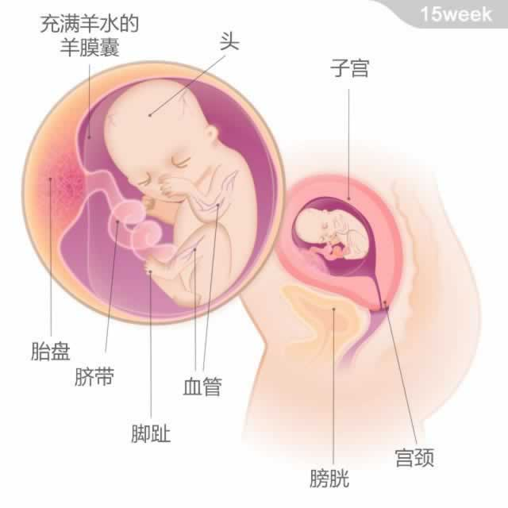

宝宝有一只鸭梨大小，重约100克；从头部到臀部的长度为108~116毫米。
宝宝有一只鸭梨大小，重约100克；从头部到臀部的长度为108~116毫米。
从现在开始之后的3周，是宝宝迅速发育的时期：他的体重会增加一倍，身长会增加好几厘米。他的四肢发育完成，部分骨头会渐渐变硬，并有钙沉积，也就是所谓的钙化出现。尽管他还是闭着眼睛，但眼球已经可以慢慢转动。
此时， 宝宝的循环系统和尿道等都开始发挥作用，他可以吸入和呼出羊水了。宝宝喜欢在妈妈的肚子里撒欢儿，可能随时拉一拉脐带、握拳、伸脚、转身，甚至翻筋斗。你会比较明显地感觉到胎动，偶尔还会有些触痛感，不必担心，这些都是正常反应。